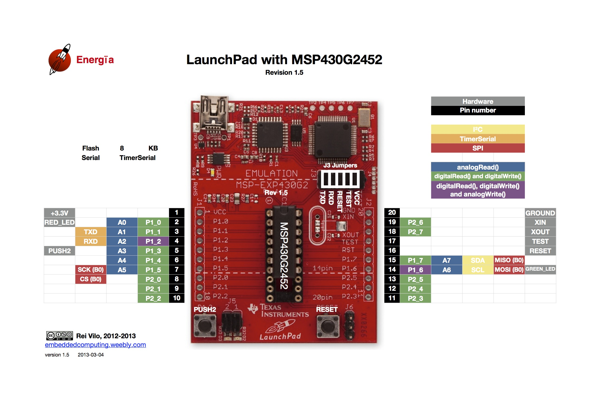
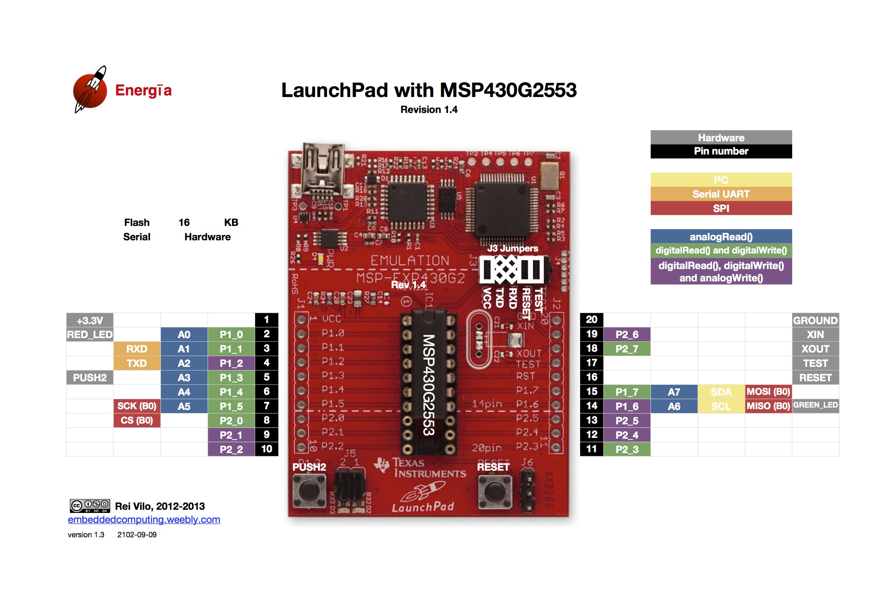

Energia supports the LaunchPad with msp430g2231, msp430g2452 and msp430g2553. These are the most popular devices. V1.4 and earlier LaunchPad shipped with msp430g2231. The 430BOOST-SENSE1 ships with the msp430g2452 and LaunchPad v1.5 ships with msp430g2553. Pin numbering for the LaunchPad variant in Energia follows the pin numbering of the header on the LaunchPad (see pin mapping diagram below for details). Example: LED1 can be turned on with:
pinMode(2, OUTPUT); digitalWrite(2, HIGH);
Pins can also be address by there alternative names P1_0 ... P1_7 and P2_0 ... P2_5. See Energia/hardware/msp430/variants/launchpad/pins_energia.h for details. The LaunchPad pins_energia.h is here on github.
pinMode(P1_0, OUTPUT); digitalWrite(P1_0, HIGH);
LED1, LED2, S2 and internal temp sensor can also be addressed by the alternative names:
RED_LED GREEN_LED; PUSH2; TEMPSENSOR;
To turn on the red LED.
pinMode(RED_LED, OUTPUT); digitalWrite(RED_LED, HIGH);
The following diagrams show the complete pin map for the LaunchPad MSP430G2452 and MSP430G2553 in Energia.
For the MSP430G2452, the jumpers J3 for serial port are unchanged although their order changes according to the revision of the LaunchPad board, revision 1.5 or 1.4.

CAUTION
For the MSP430G2553, the jumpers J3 for serial port depend on the revision of the LaunchPad board, revision 1.5 (top)
or revision 1.4 (bottom).
See Hardware UART on Launchpad 1.4

V1.5 and later of the launchpad shipped without pull-up resistors (C24 R34 47Kohm) on PUSH2 (S2 or P1_3 or pin 5). This is to reduce power consumption (77uA) if port P1_3 is driven LOW. On your LaunchPad just below the "M" in the text "MSP-EXP430G2" see if R34 is missing. To make sketches that are using PUSH2 on newer launchpads work, the pinMode has to be changed to enable the internal pull-up resistor in the MSP430. This is a simple change
e.g. pinMode(PUSH2, INPUT); becomes pinMode(PUSH2, INPUT_PULLUP);
or pinMode(P1_3, INPUT); becomes pinMode(P1_3, INPUT_PULLUP);